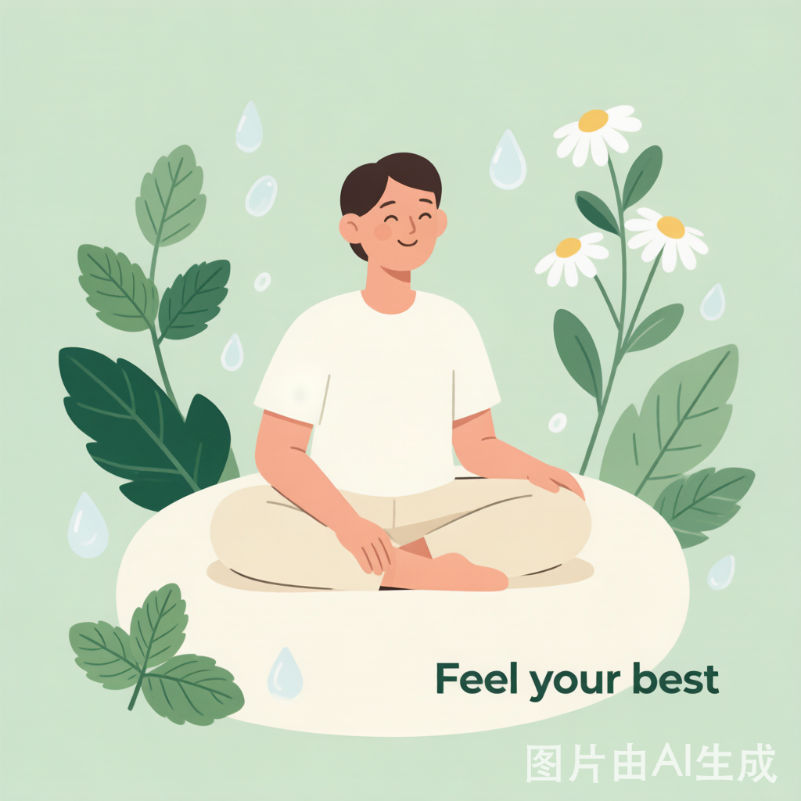
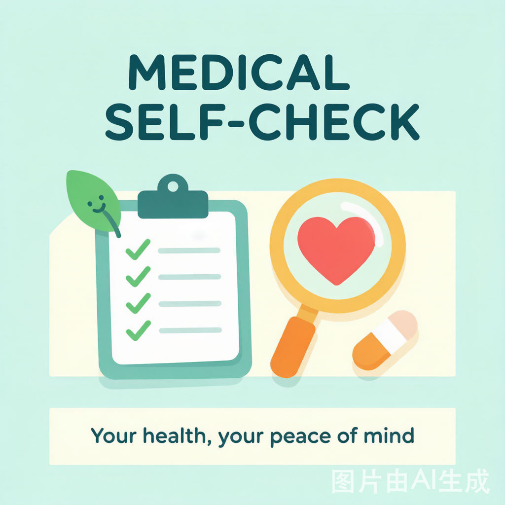
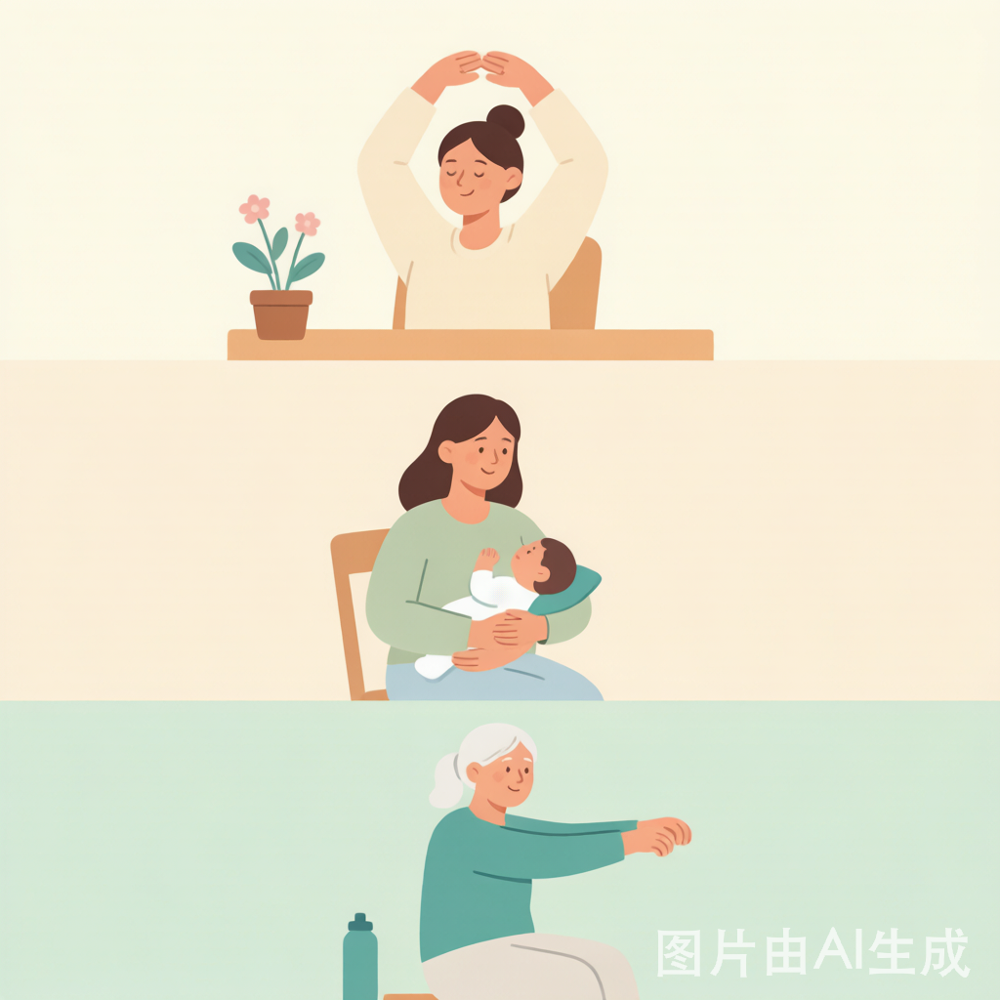
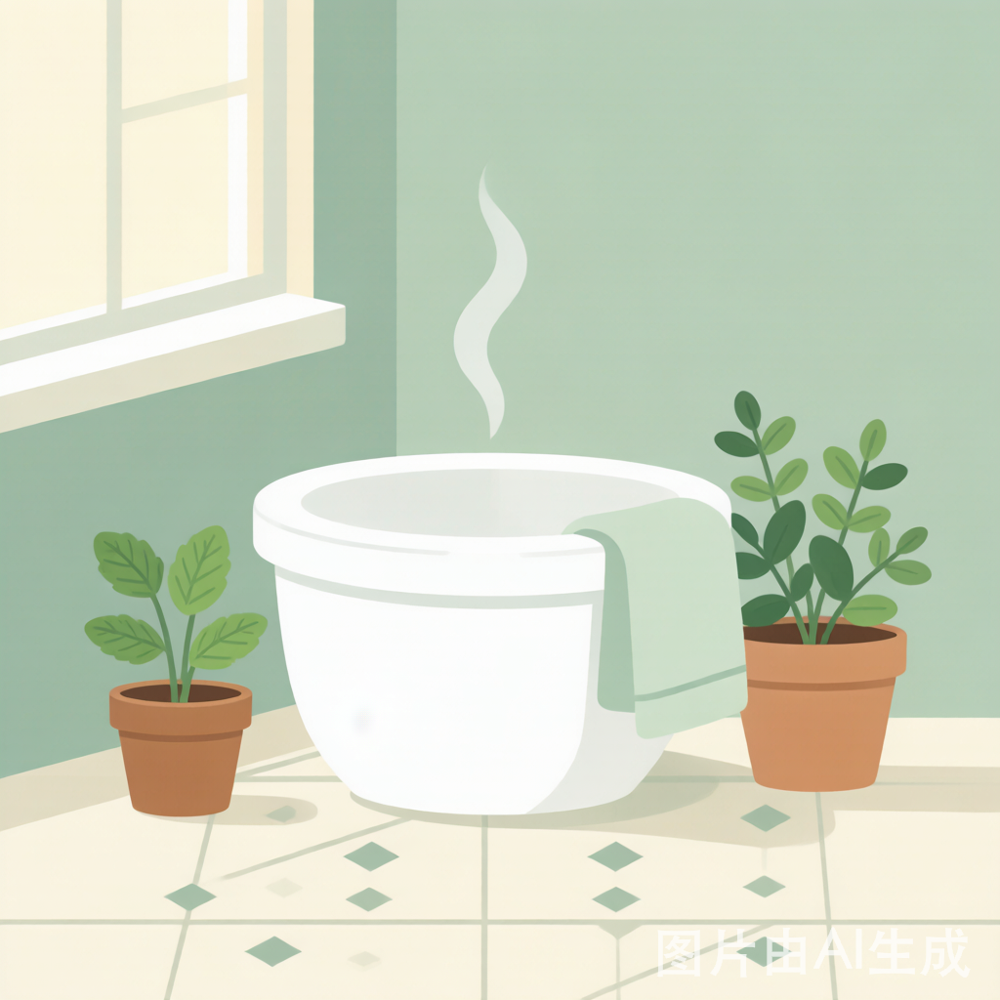
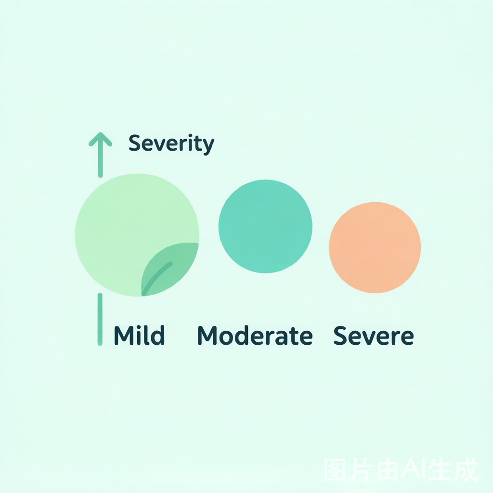

每2个人中就有1人经历过痔疮困扰。
科学自查、温和护理，从这里开始。

请勾选你正在经历的症状（可多选）
排便时见鲜红色血液
肛门有肿物突出或脱出感
肛周持续疼痛或排便灼烧感
长期排便费力或不规律
请补充一些细节信息（选填）
请选择上方症状，AI将为你分析

🔒 全程匿名，数据仅用于本次分析

长时间保持坐姿会导致肛门周围静脉回流不畅，局部充血水肿。建议每45分钟起身活动3-5分钟，改善局部血液循环。
轻触下方区域，了解内痔、外痔、混合痔的不同
齿状线以上 · 黏膜覆盖 · 以出血为主
齿状线以下 · 皮肤覆盖 · 以疼痛为主
跨齿状线 · 兼具二者 · 最常见类型

🕐 坐浴计时器
使用专用坐浴盆或浴缸，水温以手腕内侧试温不烫为宜。坐浴后用柔软毛巾轻轻蘸干，勿用力擦拭。可加入少量食盐或遵医嘱添加药物。
🥦 推荐食物清单
⚠️ 需要少吃的
常见外用药物包括痔疮膏、痔疮栓、中药熏洗剂等。使用前请仔细阅读说明书，如有不适应立即停用并咨询医生。孕妇及哺乳期女性用药需格外谨慎，必须在医生指导下使用。
💡 用药提醒：连续使用不宜超过2周，症状未缓解应及时就医，勿自行加量
每天坚持这些小习惯，逐步改善症状
从今天开始，每完成一项都是进步 💪
5道题，看看你对痔疮了解多少
简单记录，帮助你和医生更好地了解病情变化
以上仅为风险提示 不能替代专业医疗诊断
如有上述任一情况 请立即前往医院肛肠科就诊

发生在齿状线以上，表面覆盖黏膜。以出血和脱出为主要表现，早期常无明显疼痛。根据脱出程度分为I-IV度。
发生在齿状线以下，表面覆盖皮肤。以疼痛和异物感为主要表现，可触及肛周皮赘或肿块。血栓性外痔疼痛剧烈。
内痔和外痔同时存在，兼有两者的症状特点，是临床上最常见的痔疮类型，需要综合治疗，严重时需手术干预。